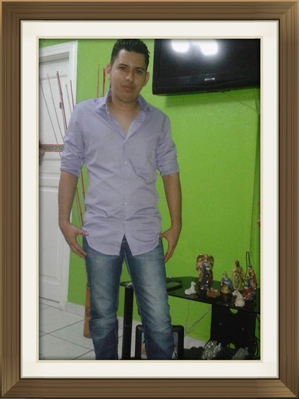

Presentacion:

Mi nombre es Jose Luis Perdomo Flores, soy Pasante de Licenciatura en Informatica Administrativa
Tengo experiencia en el area de soporte tecnico, monitoreo de gps y procedimientos administrativos.
Actualmente trabajo en la empresa Intcomex soy encargado del area de RMA.
Basicamente mi rol es verificar las garantias de productos de tecnologia, que vende la empresa.
Detectar si un producto tiene defecto de fabrica, o enviar al Centro de servicio el producto, para tener un diagnostico.
Una ves se detecta un producto defectuoso, se debe dar cambio al cliente y gestionar con la marca el reembolso de la unidad.
En algunos casos se vuelve complicado porque cada marca tiene sus procesos y politicas.